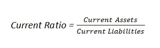

The current ratio is a liquidity ratio that measures whether or not a firm has enough resources to meet its short-term obligations. It compares a firm's current assets to its current liabilities, and is expressed as follows:
Examples (choose from the list or add a new one):
{% if form %} {% else %}| Year | Current assets | Current liabilities | Current ratio |
| {{ cr.year }} | {{ cr.current_assets }} | {{ cr.current_liabilities }} | {{ cr.current_ratio }} |